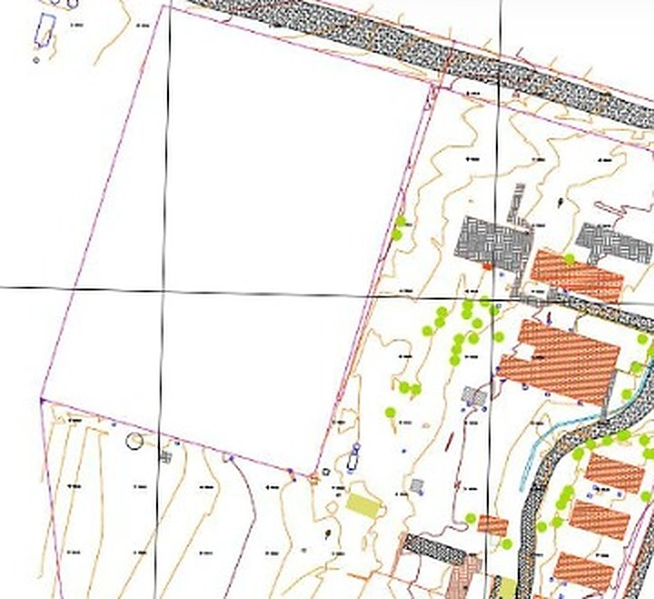

PostGIS database design
Schema design for parcels, survey control, projects, utilities, imagery footprints and metadata, with roles and constraints.
PostgreSQL · PostGISGeoexpert Land Surveyors Ltd delivers topographical and geodetic surveys, drone and LiDAR mapping, GIS and spatial databases, urban planning and EIA reports for developers, institutions, engineers and landowners across Kenya. We also help you buy and sell verified land.

Five service groups, one team. Pick what you need, or request a bundle for a full project.
We design, build and maintain PostgreSQL/PostGIS spatial databases so your survey, parcel, utility and imagery data sit in one secure, queryable system.
Schema design for parcels, survey control, projects, utilities, imagery footprints and metadata, with roles and constraints.
PostgreSQL · PostGISLoad Shapefile, GeoPackage, CAD, GeoJSON and CSV data; fix geometry, standardise CRS and validate topology.
GDAL/OGR · QGISArea, overlap, buffer and proximity analysis, saved views and reports for planning and asset management.
SQL · ViewsConnect the database to web maps and OGC services, with access control, backups and restore testing.
WMS · WFS · OGC API| Deliverable | Typical outputs | Quality checks |
|---|---|---|
| Spatial database creation | PostGIS database, schema, metadata catalogue, role model | CRS, geometry validity, constraints, backup/restore test |
The SQL script is a starting schema, not a complete production deployment. Configure database roles, secrets, backups, network security and migrations with your system administrator before use.
Publish only credentials, licences and equipment that the company can substantiate. Regulated work must be undertaken by appropriately registered professionals.
Professional scope: Cadastral survey plans, statutory survey work, physical planning approvals and EIA submissions must be handled by professionals holding the relevant current Kenyan registrations and licences. The website should state the responsible practitioner and registration details where applicable.
Browse land currently listed with Geoexpert, view each parcel on satellite imagery, and email or call us directly about any plot.
Important: Before any purchase, independently verify ownership, encumbrances, rates/rent, planning status, access and survey boundaries through official searches and qualified professionals. A website listing is not proof of title or ownership.
Loading listings…
Send your property details by email for review. Geoexpert will assess the information and may request supporting documents before deciding whether to publish the listing. Sending details does not mean the title or ownership has been verified.
Basemap: Sentinel-2 cloudless satellite mosaic (open data, 10 m). Use the layer control to switch to higher-resolution imagery or a street map. Parcel outlines are indicative; confirm boundaries through official search and survey.
Examples below demonstrate the types of work the company may showcase. Replace these sample case studies with projects completed by your team and approved for publication.
Contours, buildings, roads, power lines, vegetation and the cadastral boundary, drawn to a client-ready plan.
Classified point cloud, cross-sections and earthwork volumes for the design team.
Baseline survey, drone orthomosaic, impact assessment and NEMA submission.
Switch between the products we deliver from one flight. Sample terrain generated for this prototype.
Placeholder projects: swap in real before-and-after maps and 3D viewers.